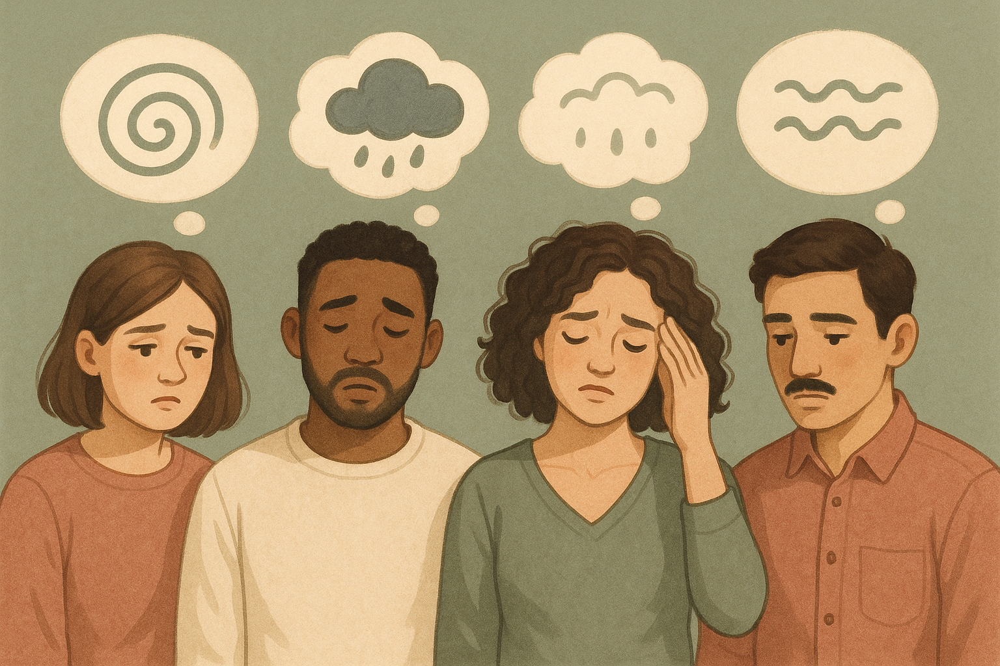
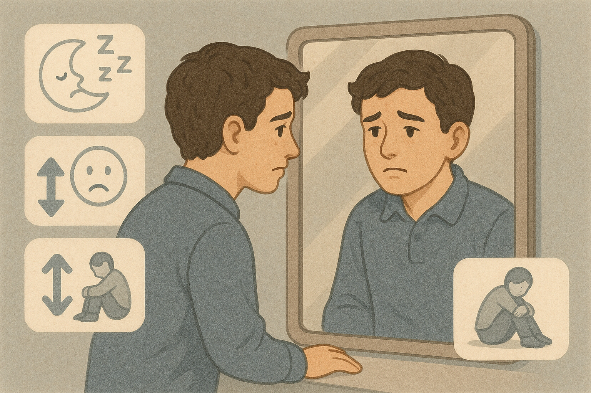
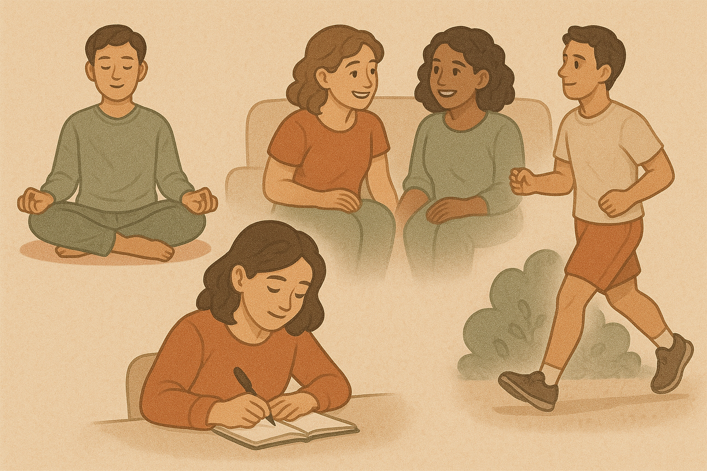

Your all-in-one guide and safe space for nurturing mental health
Mental health Information

Common Mental Health Issues
Learn about the most common mental health conditions including anxiety, depression, and stress-related disorders.

Recognising the Signs
Identify early warning signs and symptoms that may indicate mental health concerns in yourself or others.

Managing Your Mental Health
Discover practical strategies and self-care techniques to support your mental wellbeing and recovery.
Reach Out
NHS 111
For urgent mental health support, call 111 and select the mental health option.
YoungMinds
Support for youth AND parents; info on anxiety, depression, eating disorders, etc.